On this page
- Quick verdict
- Four types of agency
- How I picked
- At a glance
- 1. Fourward
- 2. Directive
- 3. Kalungi
- 4. Refine Labs
- 5. NoGood
- 6. Powered by Search
- 7. SimpleTiger
- 8. SmartBug Media
- 9. KlientBoost
- 10. Animalz
- 11. Omniscient Digital
- 12. Bay Leaf Digital
- 13. Hey Digital
- 14. Foundation Marketing
- Also worth a look
- Their own sites
- What they charge
- How to choose
- FAQs
- Sources
Most "best SaaS marketing agency" lists are written by an agency that ranks itself first without saying so. This one is written by an agency too, and yes, we're first. The difference: every fact about the other thirteen comes from their own websites, and I say where each one, ours included, is a bad fit.
I've been writing and ranking B2B SaaS content since 2020, and I now lead search, content and AI visibility at Fourward. So I read these sites the way a buyer would: what they do, who they say they serve, what they charge and the results they publish, on 19 October 2026. After ours, the 13 below are the ones I'd shortlist, ordered by how widely they're known and how closely they fit B2B SaaS.
I work at Fourward, which publishes this guide. One entry is ours, listed first. Every other fact links to that agency's own website, checked on 19 October 2026. No agency paid to be included or knew I was writing this.
- Decide the type of agency first: full-service, demand gen and paid, SEO and content, or HubSpot and RevOps. The best agency of the wrong type won't help.
- More than half the outside agencies publish at least some prices, from Hey Digital's creative plan at €2,500 a month to Kalungi's full-service team at $50,000+ a month. The rest price after a call.
- Minimum terms are normal: three to twelve months, depending on the agency.
- Eleven of the thirteen now sell AI search work, often called GEO or AEO. Ask what it includes.
The four types of B2B SaaS marketing agency
"B2B SaaS marketing agency" covers very different businesses. Before comparing names, work out which type you need. Most bad fits I've seen come from picking the right agency for the wrong job.
One partner for most channels, often led by a fractional CMO.
Best when you have no marketing team or a small one.FourwardKalungiBay Leaf DigitalNoGoodDirectivePipeline from ads, creative and landing pages.
Best when you have budget and need it to convert.Refine LabsPowered by SearchKlientBoostHey DigitalOrganic growth that compounds over time.
Best when you can wait six months or more for returns.Omniscient DigitalSimpleTigerAnimalzFoundation MarketingCRM setup, automation, lifecycle email and reporting.
Best when your CRM, not your traffic, is the bottleneck.SmartBug MediaIf you're still deciding whether to use an agency at all, I compared the costs of each option in in-house marketing team vs agency.
How I picked these agencies
- B2B SaaS is a core market, stated on their own site, not one industry among fifty.
- Named B2B SaaS results on their own site, such as pipeline, sign-ups or revenue.
- Clear about who they serve: stage, size or the clients they turn away.
- Recognition: how often they appear in the 2026 rankings that already show up for this search.
I used only each agency's own website for facts. No review sites, no paid placements. Four more good agencies are under also worth a look.
B2B SaaS marketing agencies at a glance
The same five questions for every agency. Scroll the table sideways on a phone.
| Agency | Type | Best for | Published pricing | AI search |
|---|---|---|---|---|
| Fourward | Full-service, one senior team | B2B SaaS | Priced in a written plan | Yes |
| Directive | Full-service, performance-led | Series A to IPO | Not published | Yes |
| Kalungi | Full-service | Past product-market fit, about $5M–$50M ARR | Full service from $50,000 a month | Within SEO |
| Refine Labs | Demand gen and paid | Series B and beyond | Paid media from $14,000 a month | Limited |
| NoGood | Full-service growth | Startups to Fortune 100 | Average retainer above $20,000 a month | Yes |
| Powered by Search | Paid ads and SEO | $15K+ monthly growth spend | From $5,000 a month | Yes |
| SimpleTiger | SEO and AI search | Seed to public | SEO from $5,000 a month | Yes |
| SmartBug Media | HubSpot and RevOps | Teams on HubSpot | Onboarding only | Yes |
| KlientBoost | Paid and conversion | Pre-$1M to $100M+ ARR | Not published | Yes |
| Animalz | Content and SEO | Brands that want editorial depth | Not published | Yes |
| Omniscient Digital | SEO and AI search | Product-market fit and beyond | From $120,000 a year | Yes |
| Bay Leaf Digital | Full-service | Scaling SaaS with product-market fit | Full service from $5,000 a month | Yes |
| Hey Digital | Paid ads and creative | Series A to B | Creative from €2,500 a month | No |
| Foundation Marketing | Content and AI visibility | B2B tech brands | Not published | Yes |
1. Fourward
Best for B2B SaaS teams that want one senior team across search, brand, lifecycle and events, instead of several agencies.

Fourward is one senior marketing team for B2B SaaS. It runs search, content and AI visibility, brand, PR and partnerships, lifecycle and demand generation, and field marketing and events on one plan, so every channel works toward the same pipeline goal. The people who plan the work lead it, and every engagement starts with a free audit and a written plan.
- Who it's forB2B SaaS companies that want one team across channels instead of a different agency for each.
- What we doSEO, GEO and AEO, content and comparison pages, PR and online reputation, LinkedIn, HubSpot and email workflows, webinars and executive dinners.
- PricingSet in a written plan after a free audit, as a monthly partnership or a fixed project.
- Free optionFor a limited time, a free SEO, AEO and GEO audit and a 30-minute walkthrough, plus our free AI visibility check and AI crawler checker.
- How it startsA call, a free audit, then a written plan with the price within three working days.
My take The strongest pick if you're tired of managing a separate agency for SEO, ads, PR and events. One team plans them together, senior people lead the work, and you see the plan and the price before you commit. Book the free audit.
2. Directive
Best for Series A to IPO B2B tech companies that want performance marketing at scale.
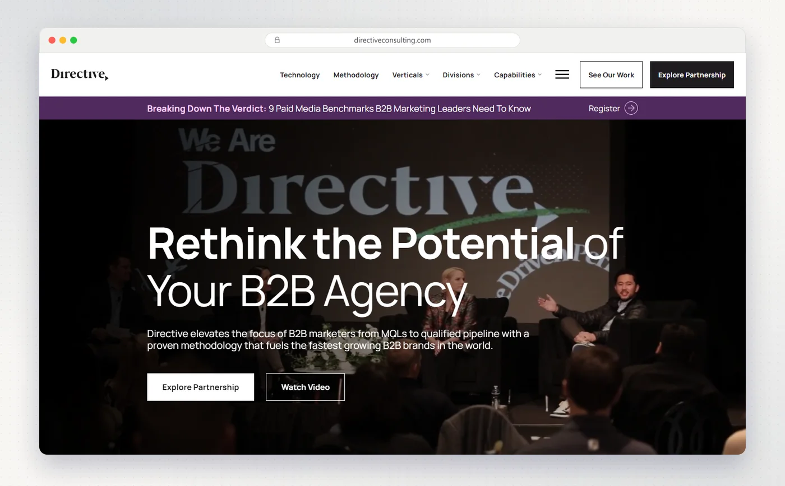
Directive, founded in 2013, is a B2B performance marketing agency. It runs paid media, SEO and content, creative and RevOps under what it calls Customer Generation, and now delivers it through its DiscoverabilityOS method.
- Who it's forB2B technology and SaaS companies from Series A to IPO.
- What they doThree divisions: Performance (SEO and content, paid media, creative, programmatic, RevOps), Commerce, and Communications (PR, influencer and social).
- PricingNot published.
- Proof on their siteArctic Wolf's closed-won revenue rose 109% quarter on quarter, with pipeline up 59%.
- AI searchYes, with dedicated GEO, AEO and LLM visibility services.
My take Directive fits funded teams that already have a marketing leader and want paid and organic run hard by one partner. Very early companies will get more from a full-service team built for their stage.
3. Kalungi
Best for SaaS companies past product-market fit that want a full outsourced marketing team led by a fractional CMO.
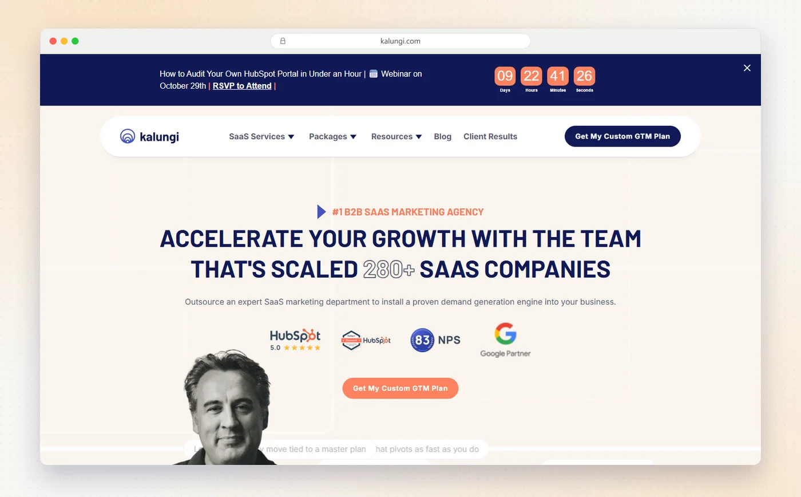
Kalungi calls itself a full-service B2B SaaS marketing agency and builds a whole marketing department around a fractional CMO. It's known for T2D3, its plan for companies aiming to triple revenue for two years, then double it for three.
- Who it's forIts done-for-you Full Service team is for SaaS companies past product-market fit, at about $5M–$50M ARR. Earlier teams get T2D3, a self-guided playbook for pre-product-market fit, or Syntropy, a done-with-you plan. Its pages give quite different ARR bands for each, so ask.
- What they doCMO-as-a-Service, ABM, RevOps and HubSpot, branding and design, paid media, content and SEO, and web development. It's a HubSpot Diamond Partner.
- PricingFull Service is $50,000+ a month, and CMO coaching starts at around $2,500 a month. Its FAQ calls 6–12 months a good minimum, and a pay-for-performance option ties part of the fee to quarterly goals.
- Proof on their siteDataGuard grew MQLs 330% and built $4M in qualified pipeline in under six months.
- AI searchWithin its SEO and content service, which includes earning citations in ChatGPT and Perplexity.
My take The clearest "we are your marketing department" offer in this list, with a published price. The pay-for-performance option is worth asking about.
4. Refine Labs
Best for Series B and later B2B tech companies that want demand gen built on brand and paid media.
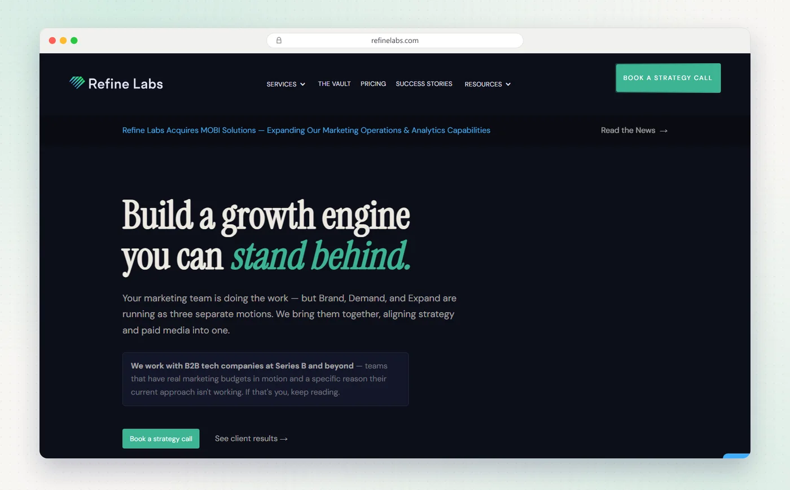
Refine Labs made its name on demand generation for B2B SaaS. Its model, Brand, Demand, Expand, connects brand building, paid demand and growth from existing customers. In July 2025 CEO Megan Bowen became majority owner and Chris Walker stepped away, and in October 2026 it acquired MOBI Solutions to add marketing operations.
- Who it's forB2B tech and SaaS companies at Series B and beyond.
- What they doBrand foundation, paid media across LinkedIn, Google, YouTube, Meta, connected TV and outdoor with in-house creative, campaigns for existing customers, and now marketing operations.
- PricingPublished on its pricing page: paid media management from $14,000 a month and full demand and media from $26,000 a month (both six-month minimums), creative only from $5,000 a month, and a six-week revenue assessment from $35,000.
- Proof on their siteClari saw 64% higher win rates and 67% lower advertising cost of acquisition.
- AI searchLimited. AEO grading sits inside its new marketing operations offer.
My take Transparent pricing and a clear point of view make Refine Labs easy to evaluate. It's built for teams with real ad budgets, not for seed-stage companies.
5. NoGood
Best for Funded startups and scale-ups that want fast, experiment-led growth across channels.
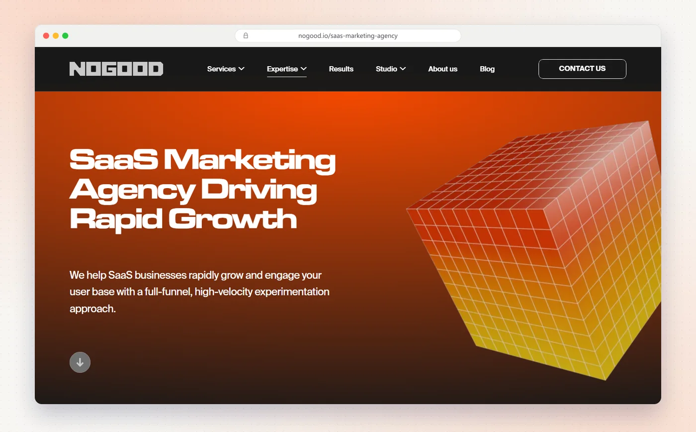
NoGood, based in New York with hubs in Miami and Dubai, is a growth marketing agency that works in squads and runs on fast experiments. It covers paid, organic, creative and AEO, with in-house studios.
- Who it's forSaaS, B2B, healthcare, fintech, consumer and AI companies, from startups and scale-ups to Fortune 100 brands.
- What they doAEO and SEO, paid growth, organic social, performance creative, digital PR, analytics and CRO, and a fractional CMO service.
- PricingMonthly retainers only, with no standard packages. Its FAQ puts the average retainer above $20,000 a month.
- Proof on their siteFor Payzer, SQLs grew 21% month on month and the demo-to-close rate 46%.
- AI searchYes, with a dedicated AEO service.
My take Good if you want a lot of channels tested quickly and have the budget for it. Ask who in the squad is senior and how many accounts they run.
6. Powered by Search
Best for B2B SaaS with long sales cycles that wants paid ads and SEO from one team, with public pricing.
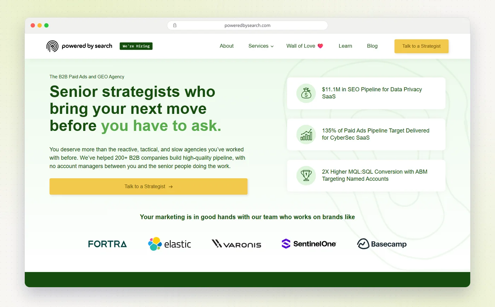
Powered by Search has worked with B2B software companies since 2009 and calls itself a B2B paid ads and GEO agency. It's one of the few that tells you on its site who it isn't for.
- Who it's forB2B tech and SaaS companies spending $15,000 or more a month on growth, with a marketing leader in-house. Not B2C or ecommerce.
- What they doGEO and SEO, paid search and social, digital PR and links, ABM, content, demand gen, HubSpot operations and RevOps, and SaaS web design.
- PricingPublished on its pricing page, billed quarterly: paid media from $5,000 a month, SEO and LLM programs from $7,500, fractional RevOps from $6,000. Monthly billing costs more. A one-off Power Hour costs $2,500.
- Proof on their siteFor iWave, revenue from paid media rose 278% year on year.
- AI searchYes, a GEO service that starts with its RAISE audit.
My take The clearest pricing in this list for a paid-plus-organic agency. Its $15,000 growth-spend line is honest, so take it seriously if you're below it.
7. SimpleTiger
Best for B2B SaaS companies that want SEO and AI search as their main growth channel.
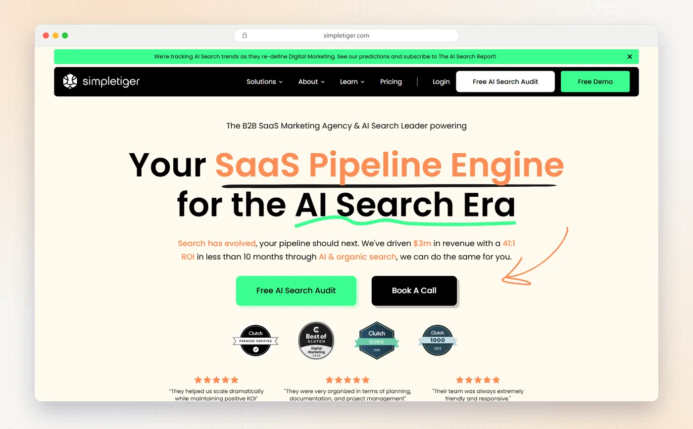
SimpleTiger, based in Sarasota, Florida, with a remote team, is a B2B SaaS agency centered on search. It covers SEO, AEO and GEO, plus paid, content and Webflow design, organized around what it calls a pipeline engine.
- Who it's forB2B SaaS and AI companies, from seed funding to publicly traded companies.
- What they doSEO with AEO and GEO, paid search and social, content, link building, digital PR, Webflow design, email and pipeline reporting.
- PricingIts pricing page lists named tiers without dollar figures, but its SaaS SEO page says to expect $5,000 to $30,000+ a month.
- Proof on their siteIts case study says Invoca got a 41:1 return in the first ten months.
- AI searchYes, with dedicated GEO and AEO pages.
My take A strong pick if organic is your main bet and you want one team that knows SaaS search well. Its range runs from $5,000 to $30,000+ a month, so get a quote early.
8. SmartBug Media
Best for SaaS teams that run on HubSpot and want one partner for it.
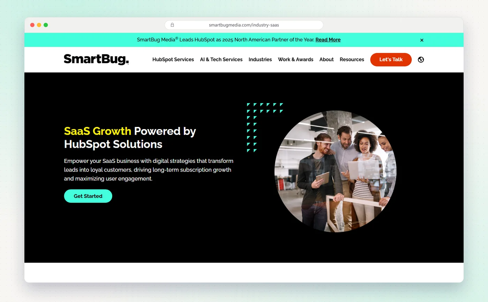
SmartBug Media, founded in 2007, is a full-service HubSpot partner. It covers HubSpot setup and operations along with demand gen, content, web and AI services for software and other industries.
- Who it's forCompanies on HubSpot, including more than 100 software and tech companies, plus healthcare, manufacturing and other industries.
- What they doHubSpot onboarding, admin and integrations, web development, demand gen, sales enablement, paid media, RevOps, SEO and PR, and AI services including AEO.
- PricingRetainers aren't published. HubSpot onboarding is $185 an hour, with packages from $2,220 to $13,690.
- Proof on their siteFor CallRail, the first content campaign nearly doubled its MQL conversion rate.
- AI searchYes, an AEO service in three tiers.
My take If HubSpot is the center of your marketing, SmartBug knows it as well as anyone. If you're not on HubSpot, most of its advantage disappears.
9. KlientBoost
Best for SaaS teams that want paid acquisition and conversion rate optimization together.
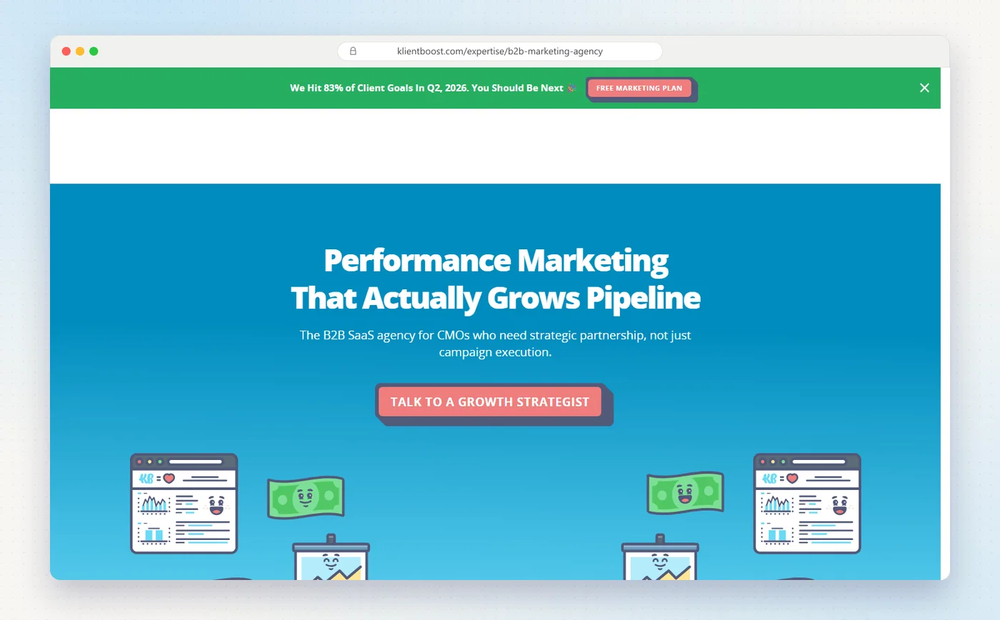
KlientBoost is a performance marketing agency with offices in Costa Mesa, Raleigh and London. Its B2B SaaS team runs paid ads and conversion work together, and it builds its own software, Kite, that tracks progress against goals and shows where to spend next.
- Who it's forFunded SaaS startups working toward $1M ARR, through small and mid-sized SaaS, up to mid-market SaaS at $10M–$100M+ ARR.
- What they doPaid ads on Google, LinkedIn and Meta, CRO and landing pages, SEO and GEO, performance creative, conversion tracking and business intelligence.
- PricingNot published. Its pricing page offers three options through a free marketing plan, and its FAQ says terms can start at three months.
- Proof on their siteIn a 2021 case study, Enboarder's conversions rose 258% and traffic 28%.
- AI searchYes, SEO and GEO are part of its B2B service.
My take Pairing ads with landing-page testing is where a lot of SaaS budget gets saved. Get the free plan, then compare its numbers with your own funnel.
10. Animalz
Best for B2B SaaS brands that want editorial content and thought leadership.
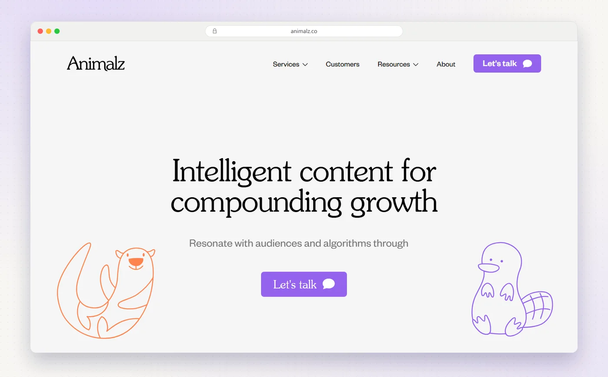
Animalz, started in New York in 2015 and now fully remote, is a content marketing and SEO agency for B2B SaaS. It's known for writing that reads like editorial, not marketing, and now adds AEO and content operations.
- Who it's forB2B SaaS companies, venture capital firms and other tech companies, including fintech, healthcare and developer tools.
- What they doThought leadership on LinkedIn, research reports, white papers, podcasts and books, SEO and AEO, demand gen assets, product marketing, and content strategy and operations.
- PricingNot published.
- Proof on their siteIt worked with Amplitude from 2015 to 2025, from seed stage to IPO.
- AI searchYes, an AEO service covering AI visibility audits, citation outreach and Reddit.
My take Pick Animalz when the writing itself is the product: founder voice, research, a reason for buyers to trust you. It isn't a paid or lifecycle agency.
11. Omniscient Digital
Best for B2B SaaS with product-market fit that wants organic growth tied to pipeline.
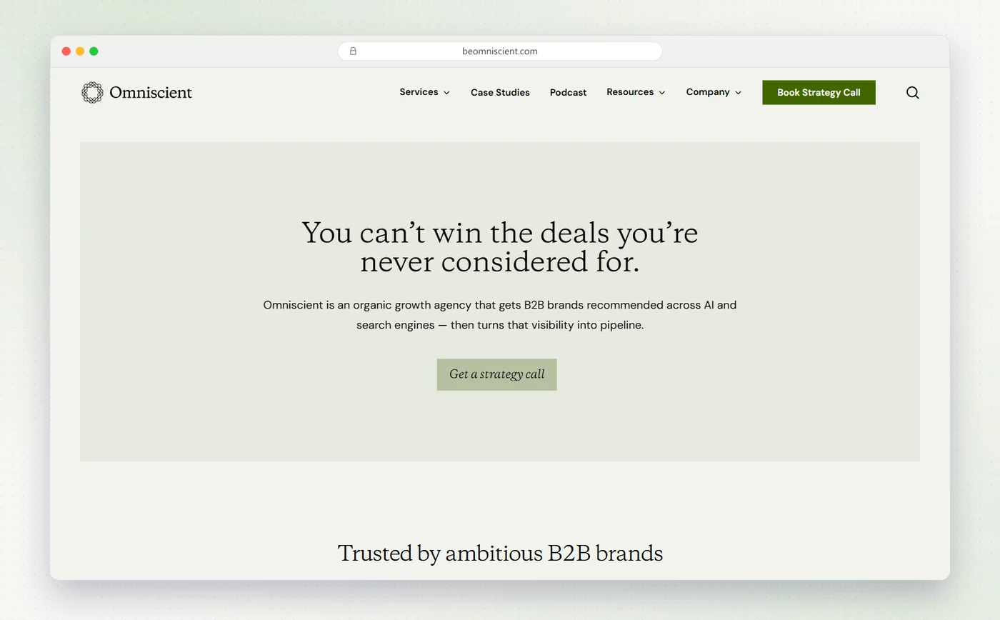
Omniscient Digital does organic growth only, for B2B companies: SEO, content, AEO, digital PR and conversion. No paid media, social or email. It publishes its price floor, which most agencies here don't.
- Who it's forB2B SaaS and tech companies, from early-stage startups and scale-ups to enterprises. Not a fit before product-market fit.
- What they doSEO strategy, AEO, technical and programmatic SEO, link building, digital PR, content production, CRO and analytics.
- PricingFull-service engagements typically start at $120,000 a year.
- Proof on their siteSmartling built $3.7M in pipeline from organic search.
- AI searchYes, a dedicated AEO service. It's also in our best GEO agencies guide.
My take The most focused organic agency here, with pipeline-based case studies to match. You'll need other partners for paid and lifecycle.
12. Bay Leaf Digital
Best for Scaling B2B SaaS that wants a full-service team at a published price.
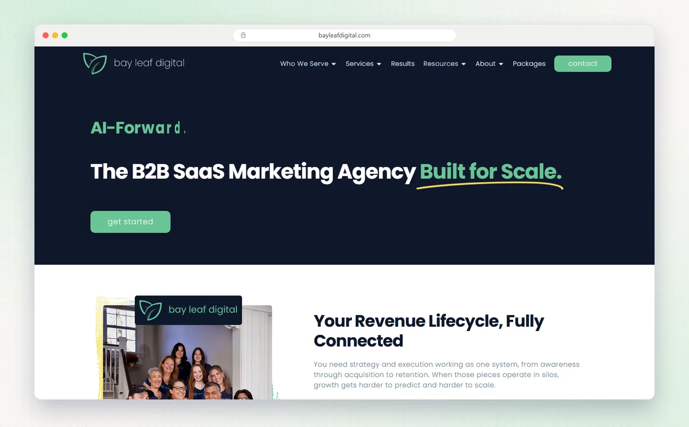
Bay Leaf Digital, founded in 2013 and based in Grapevine, Texas, does only SaaS marketing, mainly for companies in the US and Canada. It works through a Marketing-Led Growth framework, with a growth marketing manager and a senior strategist on every account.
- Who it's forB2B SaaS teams with product-market fit, from AI-native and seed-stage companies to vertical SaaS and turnarounds.
- What they doMarketing and go-to-market strategy, GEO, SEO, content, video, social, paid search, CRO, analytics, automation, HubSpot management and sales enablement.
- PricingPublished on its pricing page: an AI search package at $3,999 a month for six months, and Growth Partner from $5,000 a month.
- Proof on their siteTrueFort saw a 16x increase in new opportunities within a year.
- AI searchYes, a GEO service and the AI search package.
My take The lowest published full-service price in this list: Growth Partner from $5,000 a month. Check which channels your monthly fee covers, since the plan is built from levers you choose.
13. Hey Digital
Best for Series A and B SaaS companies that want paid ads and creative from specialists.
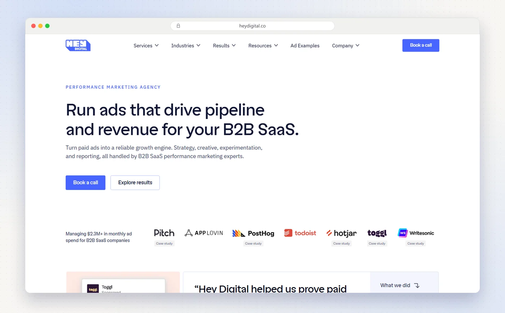
Hey Digital, headquartered in Tallinn, Estonia, with a remote team in more than 20 countries, focuses on paid ads and ad creative for B2B SaaS, with LinkedIn content and outbound as add-ons. It says plainly that it isn't the right choice for SEO.
- Who it's forB2B SaaS only, mostly Series A and B, with 20–150 employees and $1M–$20M+ in ARR.
- What they doPaid search and social, demand gen, video ads, landing pages, ABM and creative strategy on Google, LinkedIn, Meta, YouTube, Reddit and Bing.
- PricingManagement fees aren't published. Its creative subscription starts at €2,500 a month with no contract, and it recommends at least $10,000 a month in ad budget.
- Proof on their siteFor Toggl, deal value from paid rose 2.6x while ad spend fell 52%, on the same number of won deals.
- AI searchNo GEO or AEO, though it does run ads in ChatGPT.
My take A specialist that knows exactly who it serves, which I respect. Pair it with an organic partner if you need SEO or AI search.
14. Foundation Marketing
Best for B2B tech brands that want content distribution, Reddit and AI visibility.
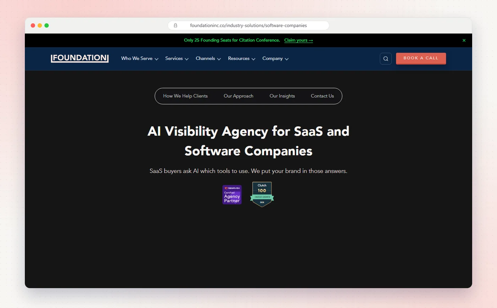
Foundation Marketing, founded in 2014 by Ross Simmonds, is known for its "create once, distribute forever" approach to content. It now positions itself as an AI visibility agency for B2B tech and SaaS, with Reddit as a stated strength.
- Who it's forB2B SaaS, AI, martech, cybersecurity, developer tools and other tech companies, from ambitious brands to enterprise.
- What they doGEO strategy, technical SEO, content distribution, thought leadership and executive visibility, digital PR, demand gen, paid media, CRO and attribution.
- PricingNot published.
- Proof on their siteFor Bitly, AI citation share for link shorteners grew to 11.7%, nearly double the next competitor.
- AI searchYes, a GEO service.
My take If your content is good but nobody sees it, Foundation's distribution focus is the fix. Ask how much of the work is new content versus spreading what you have.
Also worth a look
- 42 Agency: paid demand gen and HubSpot or Pardot operations for B2B, organized by company stage.
- Ironpaper: ABM, demand gen and web for B2B companies with long sales cycles, based in New York since 2003.
- Single Grain: SEO, paid media and AI search for SaaS from startups to enterprise, priced by custom proposal.
- Grow and Convert: bottom-funnel content and GEO for B2B SaaS, from $10,000 a month.
Do they practice AI search on their own sites?
Eleven of these agencies sell AI search work, so on 19 October 2026 I ran all thirteen outside agencies' websites through our AI crawler checker. It reads each site's robots.txt the way crawlers do, tests 20 AI bots and checks for an llms.txt file. For comparison, I ran the same kind of check on 57 B2B SaaS companies' llms.txt files.
The basics are covered everywhere: nobody blocks AI crawlers in robots.txt. Directive, NoGood, Powered by Search, SimpleTiger, Omniscient Digital and Foundation Marketing also publish an llms.txt file. It's optional and Google says it doesn't use it, so a missing file isn't a mark against anyone.
The firewall result is the one to watch. Our checker also loads each homepage as GPTBot, OAI-SearchBot, ClaudeBot and PerplexityBot, and three sites rejected at least one of those requests. That's often a rule aimed at fake bots rather than the real ones, so I'm not naming anyone. But it's worth checking on your own site.
What B2B SaaS marketing agencies charge
Most agencies price after a call. Here are the prices for ongoing work I found on the agencies' own sites:
- Bay Leaf Digital: AI search package at $3,999 a month for six months. Growth Partner from $5,000 a month.
- Powered by Search: paid media from $5,000 a month, SEO and LLM programs from $7,500, RevOps from $6,000, all billed quarterly.
- Refine Labs: creative only from $5,000 a month, paid media from $14,000, full demand and media from $26,000.
- Grow and Convert: from $10,000 a month.
- NoGood: average retainer above $20,000 a month.
- Omniscient Digital: from $120,000 a year.
- SimpleTiger: SEO from $5,000 to $30,000+ a month.
- Hey Digital: creative subscription from €2,500 a month, with no contract.
- Kalungi: CMO coaching from about $2,500 a month. Full Service from $50,000 a month.
Ad budgets come on top of fees for paid agencies. Hey Digital, for example, recommends at least $10,000 a month in ad spend.
Plan for roughly $4,000–$10,000 a month for a focused program from a smaller agency, and $14,000 to $50,000+ a month for a specialist or a full outsourced team, before ad spend. Minimum terms of three to twelve months are normal.
Free check. 30 checks, one score out of 100, under a minute.
How to choose a B2B SaaS marketing agency
Match the agency to your stage and your weakest channel, not to the longest service list.
| Your situation | Start with | Why |
|---|---|---|
| You want one team across every channel | Fourward | One senior team for search, brand, lifecycle and events |
| Past product-market fit, no marketing team | Kalungi | A full outsourced team led by a fractional CMO |
| Small team, need most channels covered | Bay Leaf Digital | Full service from a published price |
| Series B and up, demand gen is the gap | Refine Labs | Brand, demand and expansion with published plans |
| Organic is your main channel | Omniscient Digital or SimpleTiger | SEO and AI search specialists |
| Paid ads are underperforming | Hey Digital or KlientBoost | Paid specialists, KlientBoost with CRO |
| HubSpot is a mess | SmartBug Media | Full-service HubSpot partner |
Questions I'd ask on the first call
- Who will actually work on my account? Ask for names and how many other accounts each person runs.
- What's the minimum term, and what can I cancel? Three to twelve months is normal. Know your exit before you start.
- Can I talk to a SaaS client at my stage? A reference at your ARR tells you more than a logo wall.
- What do you report on? Pipeline and revenue, or clicks and impressions? Agree on it in the contract.
- What do you need from us? Access, approvals and subject experts slow most engagements more than the agency does.
Red flags
- No clear "not a fit" answer. Good agencies turn work away. The best ones say so on their site.
- Results with no client named. Anonymous percentages are hard to check. Ask for a reference.
- A senior pitch team you never see again. Ask who runs the account after kickoff.
A full SEO, AEO and GEO audit, plus 30 minutes with our team to walk you through it.
FAQs
What does a B2B SaaS marketing agency do?
It runs some or all of a SaaS company's marketing: SEO and content, paid ads, email and lifecycle, PR, events and, increasingly, AI search. Full-service agencies cover most channels, while specialists go deep on one, such as paid ads, SEO or HubSpot.
How much does a B2B SaaS marketing agency cost?
Of the agencies in this guide that publish prices, plans start at $3,999 a month for Bay Leaf Digital's AI search package, and at $5,000 a month for Bay Leaf's full service and Powered by Search's paid media. Refine Labs' paid media starts at $14,000 a month, Kalungi's full-service team at $50,000 a month and Omniscient Digital at $120,000 a year. Ad spend is extra.
Should I use an agency or build an in-house team?
It depends on your stage, budget and how fast you need results. I compared the year-one cost of an in-house team, an agency, a fractional CMO, freelancers and an embedded team in in-house marketing team vs agency.
Full-service or specialist agency?
Choose full-service if you have no marketing team, or a small one, and need several channels at once. Choose a specialist if you already have a marketing leader and one channel, such as paid or SEO, is clearly the gap.
How long are B2B SaaS agency contracts?
Usually three to twelve months. Refine Labs asks for six months on paid media, Kalungi suggests six to twelve months as a minimum, and KlientBoost starts at three months.
Do B2B SaaS agencies handle AI search?
Most now do. Eleven of the thirteen outside agencies in this guide sell AI search work, and Refine Labs checks it inside its marketing operations offer. For specialists, see our guide to the best GEO agencies.
Sources
- Directive, our story and Arctic Wolf case study, directiveconsulting.com.
- Kalungi, full service, FAQ and DataGuard case study, kalungi.com.
- Refine Labs pricing, ownership update, MOBI Solutions news, marketing operations and Clari case study, refinelabs.com.
- NoGood, SaaS marketing and Payzer case study, nogood.io.
- Powered by Search pricing and about, poweredbysearch.com.
- SimpleTiger pricing, SaaS SEO and Invoca case study, simpletiger.com.
- SmartBug Media SaaS, HubSpot onboarding and about, smartbugmedia.com.
- KlientBoost B2B SaaS and SaaS marketing, klientboost.com.
- Animalz services and about, animalz.co.
- Omniscient Digital, why us and Smartling case study, beomniscient.com.
- Bay Leaf Digital pricing and TrueFort case study, bayleafdigital.com.
- Hey Digital company facts and creative strategy and Toggl case study, heydigital.co.
- Foundation Marketing for software companies, leadership and Bitly case study, foundationinc.co.
- Fourward AI crawler checker, results for all 13 agency sites on 19 October 2026.